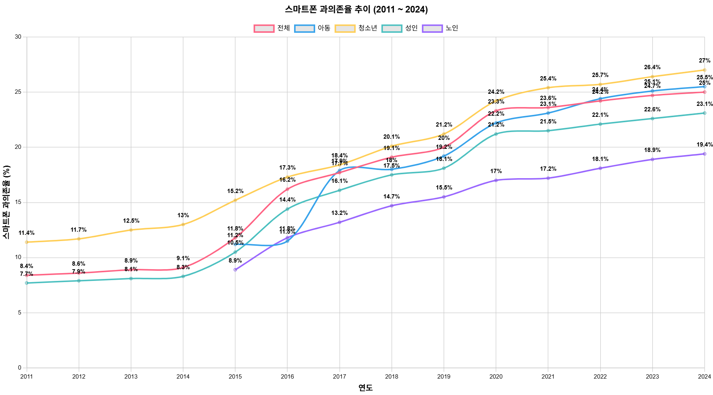
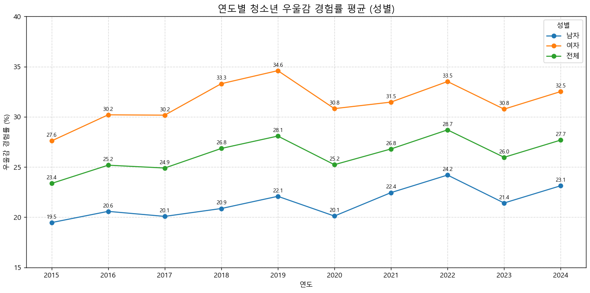
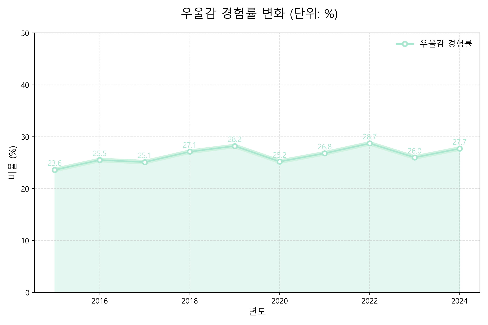

증가하는 스마트폰 과의존 추세
당신은 정말 괜찮으십니까 ?
스마트폰 과의존율 추이
청소년 우울감 경험률
정서를 달래는 도구, 동시에 흔드는 도구
불안한 마음을 감추려 켠 화면 속에, 또 다른 불안이 있었다.
내 상태 테스트 해보기
테스트 하러 가기📊 과거의 내 또래 아이들의 우울감은?
(2016년 부터 2024년도 까지만 입력해주세요)
👋 청소년 우울감 경험률 그래프

👋
📱 스마트폰 사용량과 정신건강
이 부분에는 그래프 또는 통계 자료가 들어갈 예정입니다.
- 🌙 자기 전 1시간 스마트폰 끄기
- 🧘 명상 앱 사용해보기 (ex. Calm, 코끼리)
- 🚶 하루 30분 이상 걷기
- 🔌 디지털 디톡스 주간 운영
스마트폰의 부정적 영향
(2017년 부터 2023년도 까지만 입력해주세요)
청소년 최대 고민은?
(2016년 부터 2024년도 까지 짝수년도만 입력해주세요)
지역별 스트레스 지수 지도
(2015년 ~ 2024년)